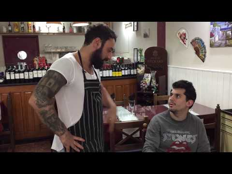

Nivel 2/7 · 20-30°C
☀️ Pero dale...
Sopa liviana de calabaza y jengibre para entrar en calor sin declarar invierno.

Ingredientes
- 600 g de calabaza
- 1 cebolla chica
- 1 rodaja fina de jengibre
- 700 ml de caldo
- Sal, pimienta y aceite
Preparación
- Salteá cebolla, calabaza y jengibre con un poco de aceite.
- Sumá caldo y cociná hasta que la calabaza esté tierna.
- Procesá, corregí sal y serví con pimienta recién molida.